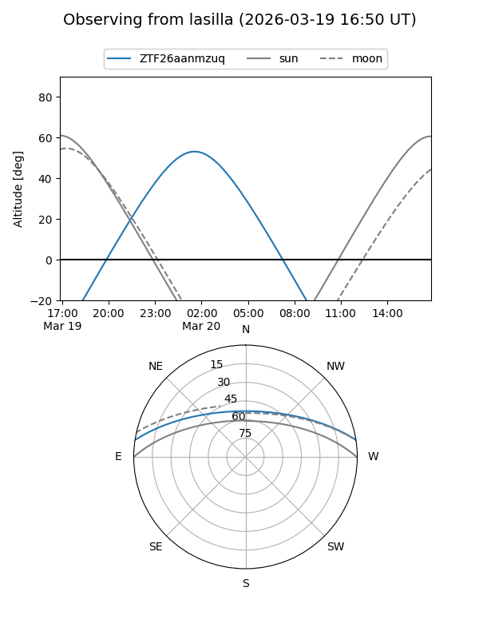
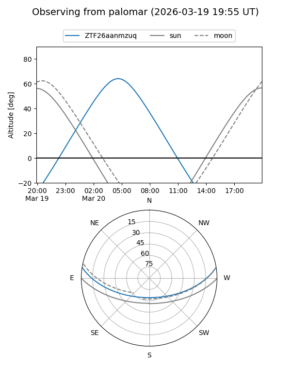

ZTF26aanmzuq
Target ZTF26aanmzuq at 2026-03-20 07:03
Aliases and brokers:
FINK: link
Lasair: link
ALeRCE: link
alt names
ZTF26aanmzuq (ztf,fink_ztf)
Coordinates:
equatorial (ra, dec) = 129.7732,+7.65022
equatorial (HMS+DMS) = 08:39:05.56,+07:39:00.80
galactic (l, b) = (218.4954,+27.38508)
Flags:
Photometry:
last ztfg=18.99
1 ztfg detections
Lightcurve
Visibility


Additional plots